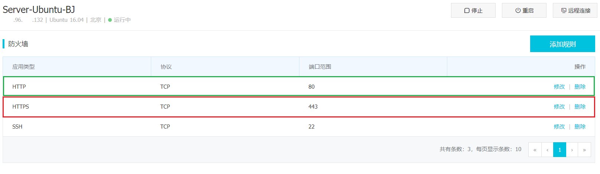

Preparation
Dependencies
Install and configure dependencies1
2 sudo apt-get update # 刷新本地包索引
sudo apt-get install -y curl openssh-server ca-certificates # 安装必要依赖
IP & DNS
Look out Public IP or DNS1
2
3
4
5
6
7 curl ifconfig.me # 查看公网IP
XXX.96.XXX.132
cat /etc/resolv.conf | grep 'nameserver' # 查看DNS
nameserver 100.100.2.136
nameserver 100.100.2.138
nameserver 100.100.2.138
nameserver 100.100.2.136
Notification Emails
Install Postfix for notifcation emails1
2 sudo apt-get install -y postfix # 安装postfix发送通知邮件，可跳过
XXX.96.XXX.132
Change Sources
Change Sources for a faster speed to download1
2
3 sudo cp /etc/apt/sources.list /etc/apt/sources.list.bak # 备份旧源
sudo rm /etc/apt/sources.list # 移除旧源
sudo vim /etc/apt/sources.list # 编辑新源
1 | /etc/apt/sources.list |
1 | sudo apt-get update # 更新源 |
Install Gitlab
Add GitLab package repository1
curl https://packages.gitlab.com/install/repositories/gitlab/gitlab-ee/script.deb.sh | sudo bash # 添加 GitLab 包仓库
Install GitLab package1
2
3
4
5
6
7
8
9
10
11
12
13
14
15
16
17
18
19
20
21
22
23
24
25
26
27
28
29
30 sudo EXTERNAL_URL="http://XXX.96.XXX.132" apt-get install gitlab-ee # 安装GitLab包
... ... ...
Chef Client finished, 453/670 resources updated in 01 minutes 57 seconds
gitlab Reconfigured!
*. *.
*** ***
***** *****
.****** *******
******** ********
,,,,,,,,,***********,,,,,,,,,
,,,,,,,,,,,*********,,,,,,,,,,,
.,,,,,,,,,,,*******,,,,,,,,,,,,
,,,,,,,,,*****,,,,,,,,,.
,,,,,,,****,,,,,,
.,,,***,,,,
,*,.
_______ __ __ __
/ ____(_) /_/ / ____ _/ /_
/ / __/ / __/ / / __ `/ __ \
/ /_/ / / /_/ /___/ /_/ / /_/ /
\____/_/\__/_____/\__,_/_.___/
Thank you for installing GitLab!
GitLab should be available at http://XXX.96.XXX.132:8080
... ... ...
Configure
Potocol & Port
在服务器供应商(如Aliyun)处自定义 防火墙设置 或 安全组配置

IP & DNS
Add Public IP or DNS for GitLab server
1 | sudo vim /etc/gitlab/gitlab.rb # 配置 server IP 或 DNS |
1 | /etc/gitlab/gitlab.rb |
Firewall
Show Firewall status1
2
3 su root
ufw status # 显示防火墙状态
Status: inactive
Make Firewall active1
2
3 ufw enable
Command may disrupt existing ssh connections. Proceed with operation (y|n)? y
Firewall is active and enabled on system startup
Add allowed potocol1
2
3 ufw allow ssh # 允许 ssh 访问
ufw allow http # 允许 http 访问
ufw allow https # 允许 https 访问
Show Firewall status again1
2
3
4
5
6
7
8
9
10
11 ufw status
Status: active
To Action From
-- ------ ----
22 ALLOW Anywhere
80 ALLOW Anywhere
443 ALLOW Anywhere
22 (v6) ALLOW Anywhere (v6)
80 (v6) ALLOW Anywhere (v6)
443 (v6) ALLOW Anywhere (v6)
Initial configuration by Web
Browse https://XXX.96.XXX.132:80
What's up! !
Reconfigure and restart1
2 gitlab-ctl reconfigure
gitlab-ctl restart
Show GitLab Status1
2
3
4
5
6
7
8
9
10
11
12
13
14
15 gitlab-ctl status
run: alertmanager: (pid 1234) 1434s; run: log: (pid 1225) 1434s
run: gitaly: (pid 1231) 1434s; run: log: (pid 1223) 1434s
run: gitlab-monitor: (pid 1235) 1434s; run: log: (pid 1230) 1434s
run: gitlab-workhorse: (pid 1236) 1434s; run: log: (pid 1222) 1434s
run: logrotate: (pid 1241) 1434s; run: log: (pid 1217) 1434s
run: nginx: (pid 1232) 1434s; run: log: (pid 1219) 1434s
run: node-exporter: (pid 1239) 1434s; run: log: (pid 1226) 1434s
run: postgres-exporter: (pid 1240) 1434s; run: log: (pid 1221) 1434s
run: postgresql: (pid 1245) 1434s; run: log: (pid 1224) 1434s
run: prometheus: (pid 1237) 1434s; run: log: (pid 1220) 1434s
run: redis: (pid 1238) 1434s; run: log: (pid 1229) 1434s
run: redis-exporter: (pid 1253) 1434s; run: log: (pid 1246) 1434s
run: sidekiq: (pid 3609) 15s; run: log: (pid 1228) 1434s
run: unicorn: (pid 3470) 78s; run: log: (pid 1227) 1434s
Browse http://XXX.96.XXX.132:80 again
Things have improved.
Refresh multiple times
Nice!